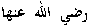
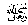
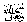
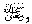

Abu Hurairahreports that Rasulullahsaid: “There are three persons whose dua is not rejected, The fasting person until he breaks the fast, the just ruler and the oppressed person, whose dua Allah lifts above the clouds and opens to it the doors of Jannah and Allah says, “I swear by my honour, verily, I shall assist you, even though it may be after sometime.”
Note: It is reported from Aa’isha

According to another report, he hardly ever lay down in bed until
Ramadhaan came to an end, Further, it is said that the Malaaikah carrying Allah’s  
Yet it is strange that, in spite of this, we still find such people who do not get what they make dua for. They ask and do not receive, but this does not mean that their dua has been rejected. We should understand what is meant by a dua being answered.
Rasulullahhas told us that when a Muslim makes dua for anything from Allahas long as he does not make dua for breaking off relationship from his near relatives or for anything sinful, he definitely receives one of three things: he gets the exact thing which he asked for. If that is not received, then Allaheither removes from him some great problem in exchange for what he wanted, or the reward for that thing for which he made dua for is stored for him in the Aakhirah (Hereafter).
Another Hadeeth says that on the day of Qiyamah, Allahwill call his slave and say to him: “O My slave, I used to command you to ask of Me and promised to answer. Did you beg of Me?” The slave will answer: “Yes I did.” Then Allahshall reply: “You did not make any dua which has not been accepted. You made dua that a certain problem should be removed, which I did for you in the worldly life. You made dua that a certain sadness should be removed from you, but the result of that dua was not known to you. I have fixed for you such and such reward in the Aakhirah (Hereafter).”
Rasulullahsays that the man shall again be reminded of each and every dua and he shall be shown how it had been answered in the world or else what reward had been stored for him in the Aakhirah (Hereafter). On seeing that reward, he shall wish that not a single dua of his had been answered on earth, so that he could receive the full rewards only in the Aakhirah (Hereafter).
Yes, dua is indeed very important and to leave it out at any time is a great loss. Hope should not be lost, even when it seems that our dua is not accepted.
Umarsays that Rasulullahsaid, “Whosoever remembers Allahin Ramadhaan, is definitely forgiven and one who asks for a favour from Allahis not refused.” Ibnu Masoodsays that, on every night of Ramadhaan, an Angel from the heavens calls out: “O You seeker of good, come near, O You seeker of evil, turn away (from evil) and open your eyes.” Thereafter, that Angel calls out: “Is there any seeker of forgiveness, that he may be forgiven? Is there someone who would repent so that Allahaccepts his repentance? Is there anyone requesting a dua, that his dua may be heard? Is there anyone wanting anything, so that his wish may be answered?”
Lastly, it should be remembered that there are certain conditions under which duas are accepted. Without these, duas may often be rejected. Among these is the use of halaal and pure food. When food not permitted by Allahis eaten, duas are not accepted.
Rasulullah j said: “Many a time a greatly troubled person lifts up his hands to the heavens, making dua and crying: ‘O Allah!’ but the food he eats is forbidden by Allah, what he drinks is forbidden, his clothes have been earned by haraam means, then in such cases how can his dua be ever accepted?”
A story is related about a group of people in Kufa, whose dua used to be always accepted. Whenever a cruel ruler was put over them, they used to make dua for a curse upon him, which quickly came to destroy him. When Hajjaaj became the ruler there, he invited these people to a feast. After they had all eaten, he said: “I am no longer afraid of the curse upon me from these people, because haraam (forbidden) food has now entered their stomachs.”
Let us think over how many things, forbidden by Allah 